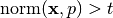
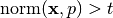
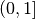

Warning
You are consulting the doc of a former version of PICOS. The latest version is HERE.
Expression¶
-
class
picos.Expression(string)¶ The parent class of
AffinExp(which is the parent class ofVariable),Norm,LogSumExp, andQuadExp.
AffinExp¶
-
class
picos.AffinExp(factors=None, constant=None, size=(1, 1), string='0')¶ A class for defining vectorial (or matrix) affine expressions. It derives from
Expression.Overloaded operators
+:sum (with an affine or quadratic expression) +=:in-place sum (with an affine or quadratic expression) -:substraction (with an affine or quadratic expression) or unitary minus *:multiplication (by another affine expression or a scalar) /:division (by a scalar) |:scalar product (with another affine expression) [.]:slice of an affine expression abs():Euclidean norm (Frobenius norm for matrices) **:exponentiation (works with arbitrary powers for constant affine expressions, and any nonzero exponent otherwise). In the case of a nonconstant affine expression, the exponentiation returns a quadratic expression if the exponent is 2, or a TracePow_Expobject for other exponents. A rational approximation of the exponent is used, and the power inequality is internally replaced by an equivalent set of second order cone inequalities.&:horizontal concatenation (with another affine expression) //:vertical concatenation (with another affine expression) <:less or equal (than an affine or quadratic expression) >:greater or equal (than an affine or quadratic expression) ==:is equal (to another affine expression) <<:less than inequality in the Loewner ordering (linear matrix inequality ⪳) >>:greater than inequality in the Loewner ordering (linear matrix inequality ⪴) Warning
We recall here the implicit assumptions that are made when using relation operator overloads, in the following two situations:
- the rotated second order cone constraint
abs(exp1)**2 < exp2 * exp3implicitely assumes that the scalar expressionexp2(and henceexp3) is nonnegative. - the linear matrix inequality
exp1 >> exp2only tells picos that the symmetric matrix whose lower triangular elements are those ofexp1-exp2is positive semidefinite. The matrixexp1-exp2is not constrained to be symmetric. Hence, you should manually add the constraintexp1-exp2 == (exp1-exp2).Tif it is not clear from the data that this matrix is symmetric.
-
H¶ Transposition
-
T¶ transposition
-
conj¶ complex conjugate
-
constant= None¶ constant of the affine expression, stored as a
cvxopt sparse matrix.
-
factors= None¶ dictionary storing the matrix of coefficients of the linear part of the affine expressions. The matrices of coefficients are always stored with respect to vectorized variables (for the case of matrix variables), and are indexed by instances of the class
Variable.
-
imag¶ imaginary part (for complex expressions)
-
is0()¶ is the expression equal to 0 ?
-
isconstant()¶ is the expression constant (no variable involved) ?
-
real¶ real part (for complex expressions)
-
size¶ size of the affine expression
-
value¶ value of the affine expression
-
vtype¶ vype (for complex variables)
- the rotated second order cone constraint
Variable¶
-
class
picos.Variable(parent_problem, name, size, Id, startIndex, vtype='continuous', lower=None, upper=None)¶ This class stores a variable. It derives from
AffinExp.-
Id= None¶ An integer index (obsolete)
-
bnd¶ var.bnd[i]returns a tuple(lo,up)of lower and upper bounds for the ith element of the variablevar. None means +/- infinite. ifvar.bnd[i]is not defined, thenvar[i]is unbounded.
-
endIndex¶ end position in the global vector of all variables
-
name= None¶ The name of the variable (str)
-
parent_problem= None¶ The Problem instance to which this variable belongs
-
passed= None¶ list of solvers which are already aware of this variable
-
semiDef¶ True if this is a sym. variable X subject to X>>0
-
set_lower(lo)¶ sets a lower bound to the variable (lo may be scalar or a matrix of the same size as the variable
self). Entries smaller than -INFINITY = -1e16 are ignored
-
set_sparse_lower(indices, bnds)¶ sets the lower bound bnds[i] to the index indices[i] of the variable. For a symmetric matrix variable, bounds on elements in the upper triangle are ignored.
Parameters: - indices (
list) – list of indices, given as integers (column major order) or tuples (i,j). - bnds – list of lower bounds.
Warning
This function does not modify the existing bounds on elements other than those specified in
indices.Example:
>>> import picos as pic >>> P = pic.Problem() >>> X = P.add_variable('X',(3,2),lower = 0) >>> X.set_sparse_upper([0,(0,1),1],[1,2,0]) >>> X.bnd {0: (0.0, 1.0), 1: (0.0, 0.0), 2: (0.0, None), 3: (0.0, 2.0), 4: (0.0, None), 5: (0.0, None)}
- indices (
-
set_sparse_upper(indices, bnds)¶ sets the upper bound bnds[i] to the index indices[i] of the variable. For a symmetric matrix variable, bounds on elements in the upper triangle are ignored.
Parameters: - indices (
list) – list of indices, given as integers (column major order) or tuples (i,j). - bnds – list of upper bounds.
Warning
This function does not modify the existing bounds on elements other than those specified in
indices.- indices (
-
set_upper(up)¶ sets an upper bound to the variable (up may be scalar or a matrix of the same size as the variable
self). Entries larger than INFINITY = 1e16 are ignored
-
startIndex¶ starting position in the global vector of all variables
-
value¶ value of the variable. The value of a variable is defined in the following two situations:
- The user has assigned a value to the variable,
by using either the present
valueattribute, or the functionset_var_value()of the classProblem. Note that manually giving a value to a variable can be useful, e.g. to provide a solver with an initial solution (see the optionhotstartdocumented inset_all_options_to_default()) - The problem involving the variable has been solved,
and the
valueattribute stores the optimal value of this variable.
- The user has assigned a value to the variable,
by using either the present
-
vtype¶ one of the following strings:
‘continuous’ (continuous variable)
‘binary’ (binary 0/1 variable)
‘integer’ (integer variable)
‘symmetric’ (symmetric matrix variable)
‘complex’ (complex matrix variable)
‘hermitian’ (complex hermitian matrix variable)
- ‘semicont’ (semicontinuous variable
[can take the value 0 or any other admissible value])
- ‘semiint’ (semi integer variable
[can take the value 0 or any other integer admissible value])
-
Norm¶
-
class
picos.Norm(exp)¶ Euclidean (or Frobenius) norm of an Affine Expression. This class derives from
Expression.Overloaded operators
**:exponentiation (only implemented when the exponent is 2) <:less or equal (than a scalar affine expression) -
exp= None¶ The affine expression of which we take the norm
-
QuadExp¶
-
class
picos.QuadExp(quad, aff, string, LR=None)¶ Quadratic expression. This class derives from
Expression.Overloaded operators
+:addition (with an affine or a quadratic expression) -:substraction (with an affine or a quadratic expression) or unitary minus *:multiplication (by a scalar or a constant affine expression) <:less or equal than (another quadratic or affine expression). >:greater or equal than (another quadratic or affine expression). -
LR= None¶ stores a factorization of the quadratic expression, if the expression was entered in a factorized form. We have:
LR=Nonewhen no factorization is knownLR=(aff,None)when the expression is equal to||aff||**2LR=(aff1,aff2)when the expression is equal toaff1*aff2.
-
aff= None¶ affine expression representing the affine part of the quadratic expression
-
LogSumExp¶
-
class
picos.LogSumExp(exp)¶ - Log-Sum-Exp applied to an affine expression.
- If the affine expression
zis of size ,
with elements
,
with elements  ,
then LogSumExp(z) represents the expression
,
then LogSumExp(z) represents the expression
 .
This class derives from
.
This class derives from Expression.
Overloaded operator
<:less or equal than (the rhs must be 0, for geometrical programming) -
value¶ value of the logsumexp expression
GeoMeanExp¶
-
class
picos.GeoMeanExp(exp)¶ A class storing the geometric mean of a multidimensional expression. It derives from
Expression.Overloaded operator
>:greater or equal than (the rhs must be a scalar affine expression) -
exp= None¶ The affine expression to which the geomean is applied
-
NormP_Exp¶
-
class
picos.NormP_Exp(exp, alpha, beta=1)¶ A class storing the p-norm of a multidimensional expression. It derives from
Expression. Use the functionpicos.norm()to create a instance of this class.Generalized norms are also defined for
 , by using the usual formula
, by using the usual formula
 . Note that this function
is concave (for ) over the set of vectors with nonnegative coordinates.
When a constraint of the form  with
. Note that this function
is concave (for ) over the set of vectors with nonnegative coordinates.
When a constraint of the form  with  is entered, PICOS implicitely forces
is entered, PICOS implicitely forces  to be a nonnegative vector.
to be a nonnegative vector.Overloaded operator
<:less or equal than (the rhs must be a scalar affine expression, AND p must be greater or equal than 1) >:greater or equal than (the rhs must be a scalar affine expression, AND p must be less or equal than 1) -
denominator= None¶ denominator of p
-
exp= None¶ The affine expression to which the p-norm is applied
-
numerator= None¶ numerator of p
-
TracePow_Exp¶
-
class
picos.TracePow_Exp(exp, alpha, beta=1)¶ A class storing the pth power of a scalar, or more generally the trace of the power of a symmetric matrix. It derives from
Expression. Use the functionpicos.tracepow()or simply the overloaded**exponentiation operator to create an instance of this class.Note that this function is concave for
 , and convex for the other values of
, and convex for the other values of  over the set of nonnegative variables
over the set of nonnegative variables exp(resp. over the set of positive semidefinite matricesexp), and PICOS implicitely forces the constraintexp >0(resp.exp >> 0) to hold.Overloaded operator
<:less or equal than (the rhs must be a scalar affine expression, AND p must be either greater or equal than 1 or negative) >:greater or equal than (the rhs must be a scalar affine expression, AND p must be in the range ) -
denominator= None¶ denominator of p
-
dim= None¶ dimension of
exp
-
exp= None¶ The affine expression to which the p-norm is applied
-
numerator= None¶ numerator of p
-
DetRootN_Exp¶
-
class
picos.DetRootN_Exp(exp)¶ A class storing the nth root of the determinant of a positive semidefinite matrix. It derives from
Expression. Use the functionpicos.detrootn()to create an instance of this class. Note that the matrix is forced to be positive semidefinite
when a constraint of the form
is forced to be positive semidefinite
when a constraint of the form t < pic.detrootn(X)is added.Overloaded operator
>:greater or equal than (the rhs must be a scalar affine expression) -
dim= None¶ dimension of
exp
-
exp= None¶ The affine expression to which the det-root-n is applied
-